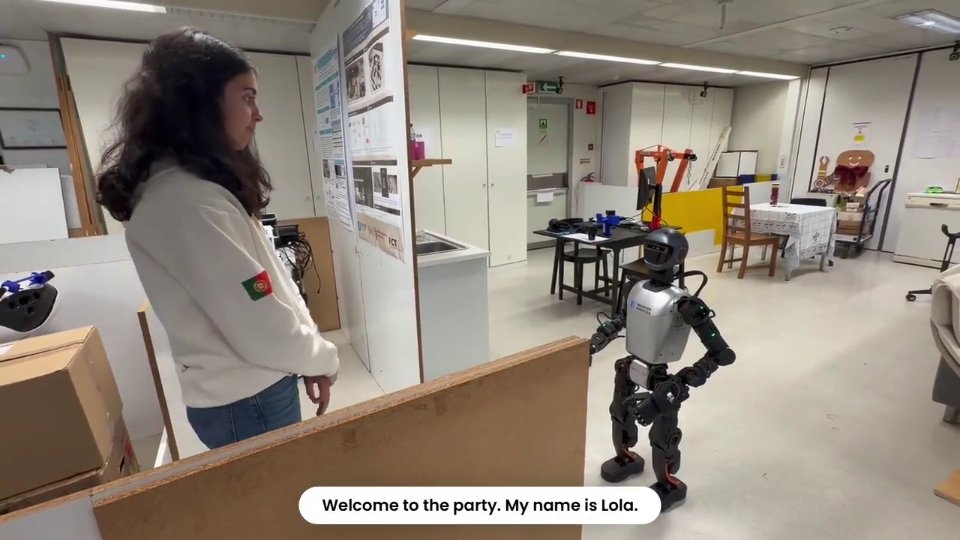
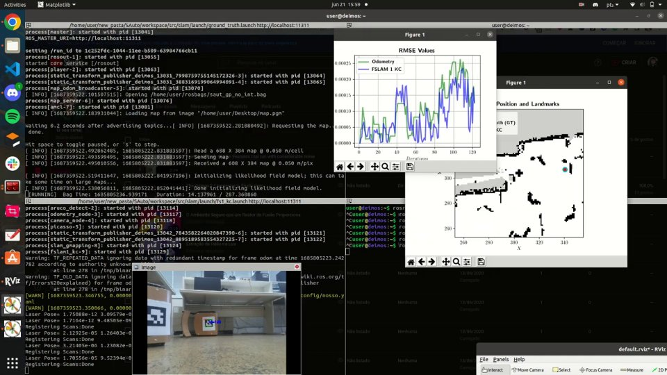
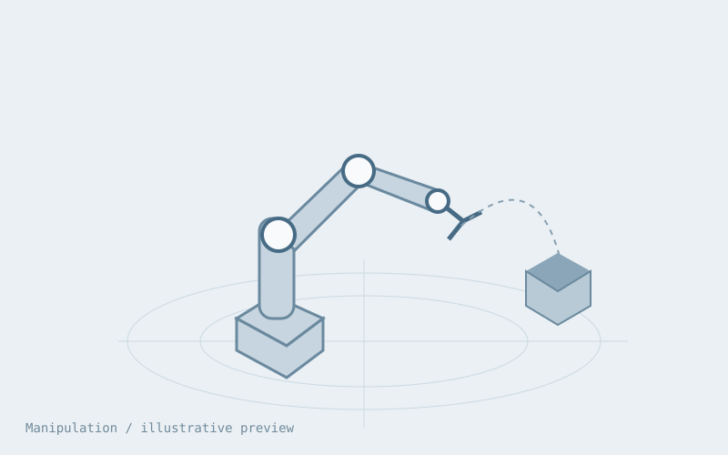
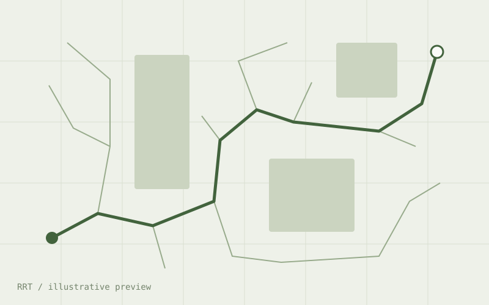

Humanoid locomotion research
ISR-Lisboa · Instituto Superior Técnico
Learning-based locomotion and whole-body control for humanoid robots.
Legged and whole-body control, with validation on the physical Booster T1.
Legged locomotion · simulation

Navigation, manipulation, and interaction for autonomous service tasks.

Mapping & estimation. Video from the project.

Planning & manipulation. Illustrative preview pending project footage.

Sampling-based planning. Illustrative preview pending project footage.
Learning-based locomotion and whole-body control for humanoid robots.
Humanoid domestic robotics and autonomous task execution.
Navigation, manipulation, and interaction on service robots.
Instituto Superior Técnico · Lisbon
Systems, Control and Robotics · Stockholm
Instituto Superior Técnico · Lisbon
Service-robot development and RoboCup@Home preparation.
Joint Lisbon–Austin work on humanoid domestic robots.
Technical guidance on a student research internship.
Contributions to manipulation and systems-integration hackathons.